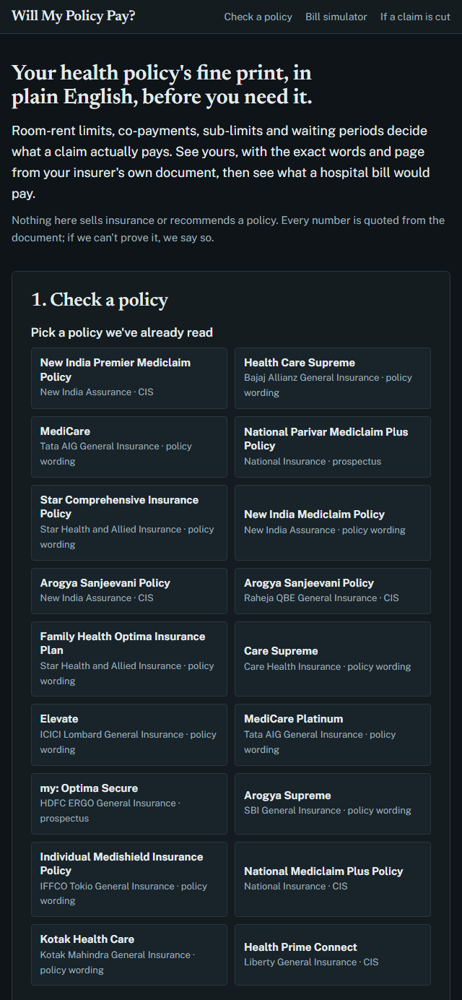
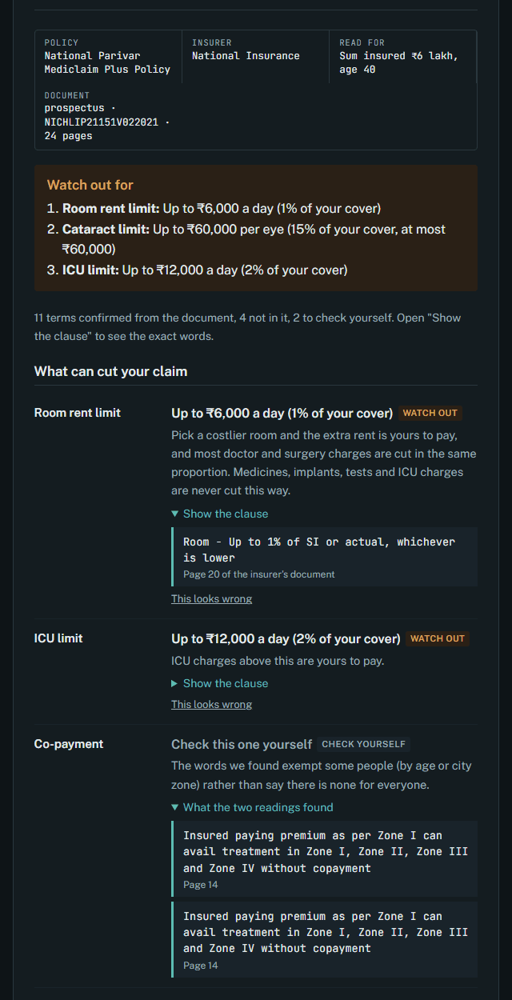
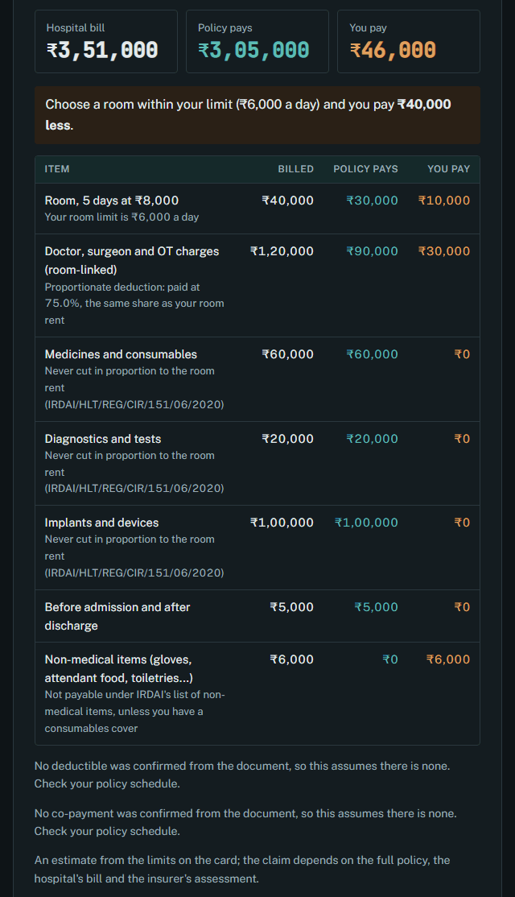

Case study · Personal project · Oct 2026
Will My Policy Pay?
Health insurance fine print, explained before you need it: every limit quoted from the insurer's own document, and what a hospital bill would actually pay.
Akshay Dhar · akshaykumardhar14@gmail.com · github.com/AKSHAYKUMARDHAR/Will-My-Policy-Pay
The problem
In a 2025 LocalCircles survey, only 25% of policyholders who had claimed said their claims were fully approved; 36% had a claim rejected and 33% had one only partly paid. Insurers processed 3.26 crore health claims in 2024-25 and repudiated 8%, and IRDAI told Parliament it doesn't record why.
Much of the money is lost in a few lines of fine print people never read. With a room-rent cap of 1% of the sum insured, a ₹5 lakh policy pays ₹5,000 a day for the room; take an ₹8,000 room and most doctor and surgery charges are cut in the same proportion. On a knee replacement that turns ₹15,000 of extra rent into ₹60,000 out of pocket.
Who it's for
- The family guardian checking a parent's older policy before a hospital visit.
- The new buyer comparing two policies, now cheaper since GST came off individual health premiums in September 2025.
- The patient before a planned surgery deciding which room to take.
What I built
A free web tool. Pick a policy (or upload its PDF) and get a fine-print card of 17 terms: room and ICU limits, co-payments, deductible, cataract and modern-treatment caps, waiting periods, maternity, bonus and restoration. Every value shows the exact words and page from the insurer's document. A bill simulator then shows line by line what a hospital bill would pay, and a guide covers what to do if a claim is cut, with a grievance letter.



The 18 ready-made cards are the documents the evaluation has read, and each is checked against my answer key before it ships: any value the key contradicts or can't settle shows as "check this yourself", so all four wrong facts the evaluation found stay off the cards. Uploads get no such review, and the site says so. Also in the product: share links that open a card or a sample bill, a "This looks wrong" button on every term, feedback questions that measure the PRD's goals, and an event log that stores no document text. Uploaded PDFs are read and thrown away. When the free model quota runs out, uploads say so plainly and the ready-made cards keep working.
Product decisions
- The model reads; code checks, explains and calculates. Gemini only extracts values with quotes. Every explanation a user reads is written once in code, and the bill simulator is deterministic, tested against 25 hand-worked bills.
- Proof or nothing. A term is shown only when two independent reads agree, the quote is found on the cited page and contains the value's numbers. Otherwise the card says "not found" or "check this yourself", with both quotes.
- "No limit" needs the words. A summary that lists "Expenses incurred towards Ambulance" doesn't say there is no cap; the policy schedule might set one. Saying "no limit" wrongly is the error this product exists to prevent.
- IRDAI's rules in code. The proportionate deduction never touches medicines, implants, tests or ICU charges (IRDAI's 2020 circular), and the simulator cites it on each line.
- Neutral by design. No recommendations, rankings or commissions: selling insurance is licensed activity in India.
- English only, written for a first-time reader.
How I tested it
This time the test data is real. I collected 14 public policy documents from 10 insurers (wordings, customer information sheets and prospectuses) and froze them in git with their hashes before writing any prompt. Then I wrote the answer keys by hand from the documents: 85 facts for 5 dev documents and 153 for 9 held-out documents, each with the exact quote and page, checked against the PDFs by a script. The main labelling rule is "only what the document says": if a summary doesn't state a limit, the answer is "not stated", because the policy schedule can still set one.
Every answer is scored correct, wrong (a value shown that the document doesn't support: the error that costs money) or withheld ("not found" or "check this yourself" where the document does state a value). I ran the same model answers with and without the checks, to measure what the checks themselves do.
| Dev run (85 facts) | Correct | Wrong | Withheld |
|---|---|---|---|
| Prompt v1 · 2 reads, no checks | 88% | 8.2% | 4% |
| Prompt v1 · 2 reads + checks | 74% | 1.2% | 25% |
| Prompt v2 · 2 reads + checks (4 of 5 documents) | 91% | 1.5% | 7% |
| Prompt v3 · smaller model (gemini-3.5-flash-lite) | 80% | 8.2% | 12% |
| Prompt v3 · 2 reads + checks | 92% | 3.5% | 5% |
| Prompt v3 + "none for everyone" checks · frozen | 91% | 0% | 9% |
Then I froze the configuration (prompt version 3 on gemini-3.5-flash, two reads, every check) and ran the 9 held-out documents once.
| Held-out run (152 facts) | Correct | Wrong | Withheld |
|---|---|---|---|
| 1 read, no checks | 90.8% | 3.9% | 5.3% |
| 2 reads, no checks | 93.4% | 3.9% | 2.6% |
| 2 reads + checks · what ships | 91.4% | 3.3% | 5.3% |
On review, 3 of release run 1's 5 wrong facts were mistakes in my answer key (more below), so I corrected the rules, moved those documents to development, and froze 9 fresh documents from 8 insurers for release run 2: 141 scored facts, 61 of them "not stated", labelled before any model read them, on the unchanged system. Google's servers failed the first document with "high demand" errors whose retries used up the day's free requests, so after 4 documents the result was already settled:
| Release run 2, first 4 of 9 documents (67 facts) | Correct | Wrong | Withheld |
|---|---|---|---|
| 1 read, no checks | 86.6% | 4.5% | 9.0% |
| 2 reads, no checks | 89.6% | 4.5% | 6.0% |
| 2 reads + checks · what ships | 80.6% | 4.5% | 14.9% |
Release gate
- Bill simulator matches all 25 hand-worked bills: 25 of 25
- Run 1, wrong facts ≤ 2%: 5 of 152 (3.3%)
- Run 1, correct ≥ 85%: 139 of 152 (91.4%)
- Run 2, wrong facts ≤ 2%: 3 in the first 4 documents, against 2 allowed for all 9
- Run 2, correct ≥ 85%: 80.6% on the first 4 documents
- Every value shown is quoted and found on its cited page: all of them
What failed, and what's next
The worst early error called ambulance cover "up to your sum insured" from a line that only said "Expenses incurred towards Ambulance". A "no limit" answer now needs words that say so. Version 3 still showed 3 wrong facts on the full dev set: two read "no co-payment" from sentences that only exempt some people (by entry age or city zone), and one took a ceiling shared by several covers as AYUSH's own limit. Two more code checks send such quotes to "check this yourself", which took wrong facts to zero on the same answers and cost one correct one. The smaller, cheaper models failed the bar: both read "1% of the sum insured or actual, whichever is lower" as a choice of two limits and called a premium discount a bonus. The model that passes allows 20 free requests a day, so ready-made cards are built from the evaluation's own readings and uploads are capped.
Release run 1 failed my own gate. On 9 policies it had never seen, 139 of 152 facts were right and 5 were wrong: 3.3% against a 2% bar. The score stands, because held-out labels never change after a run. On review, though, none of the 5 is a clear model error. Two joined a separate 90-day wait for diabetes, hypertension and heart conditions to the 24-month specific-illness clause: wider than my answer key, and real for a buyer with diabetes. Three were mistakes in my answer key, including HDFC's AYUSH limit, which I first reported as the model's worst error. The model had quoted the AYUSH row of the insurer's plan table ("Covered upto sum insured"), and my key had missed that table.
So version 2 changed the answer-key rules, not the system, and release run 2 failed the gate on real errors. IFFCO Tokio's reinstatement, bought at the time of a claim, was shown as a 100% refill of cover. National's 20% co-payment in non-network hospitals was read as "no co-payment": the exemption mistake the dev checks catch for age and city zone, but not for "non-network". And Liberty's 90-day wait for listed critical illnesses was left out of the waiting periods; my key had its own miss there (a 24-month list on page 14), which stays logged rather than fixed. With the gate already failed, I stopped the run there; the other 5 documents stay frozen and labelled for the next one.
Next: an exemption check that covers network status, a check that an "optional" or "may opt" clause can't become a base-plan value, and then a third set of unseen documents, since a fix tuned on run 2 has to be tested on documents it hasn't seen. Later: a second labeller, the policy schedule as a second upload (it sets the limits a wording leaves open), and scanned PDFs, which the tool currently turns away.
What I learned
- Verification is the product. The same two reads showed 7 wrong facts without the checks and 1 with them.
- Check the answer key before blaming the model, and then check the model again. Three of release run 1's five "wrong" facts were my labelling mistakes, and the fix I first drafted for the AYUSH "error" would have cost 4 correct answers and caught nothing. Release run 2's three errors were real.
- Outages cost quota. Google's "high demand" errors counted against the free daily limit, so the retry policy is part of the evaluation design: a document the provider never served is now left out of the scores, not counted as withheld.
- The labeller makes mistakes too. The model found a bonus clause I had missed (Bajaj, page 22); I corrected the dev key and logged it. Held-out labels never change after a run.
- Real documents beat hand-written test data: every hard case (tables, two-column pages, "whichever is lower") came from an insurer's own PDF.
- Free tiers shape evaluation plans: 20 requests a day decided the order of every run.
The 14 documents are real, public policy documents; the answer keys are mine, written from the documents before any model read them. Every number comes from a logged run in the repo.